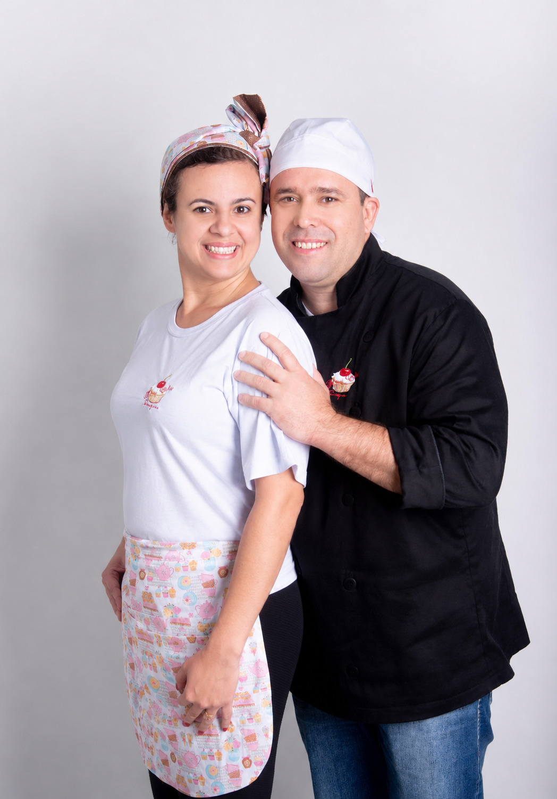

Confeitaria autoral · sob encomenda
Doce é o
ofício
de Mary.
Cada bolo nasce de uma receita pensada para uma só pessoa. Agora, pedir esse cuidado cabe na palma da sua mão.
Conhecer o appA Vitrine
Um giro completo,
antes do primeiro toque.
O Ateliê
Receitas que levam tempo de verdade.
Por trás de cada fatia existe uma rotina de teste, ajuste e paciência. Mary Cake nasceu de uma cozinha pequena e de um caderno cheio de anotações — hoje, essa mesma dedicação está em cada pedido feito pelo aplicativo, do primeiro toque até a retirada na porta.
Degustação Digital
Escolha um sabor,
transforme a atmosfera.
Toque em um dos nossos sabores autorais e sinta a iluminação e os reflexos WebGL reagirem à essência de cada criação.
Champagne & Ouro
Massa leve de baunilha de Madagascar com creme champagne e delicadas lascas reluzentes.
Ativar atmosfera →Red Velvet & Berries
Massa aveludada carmesim, mousse de cream cheese artesanal e redução de frutas vermelhas.
Ativar atmosfera →Pistache Imperial
Pistache de Bronte moído na hora, compota sutil de frutas amarelas e calda suave de chocolate branco.
Ativar atmosfera →Experiência Digital
Um ecossistema tão cuidado
quanto a receita.
Vitrine, carrinho e conta — três telas, uma só experiência fluida, desenhada para que escolher o seu doce seja tão prazeroso quanto comê-lo.
-
01
Vitrine
Explore cada criação com imagens que encantam.
-
02
Carrinho
Monte seu pedido com praticidade e transparência.
-
03
Conta
Acompanhe seu histórico e repita seus favoritos com facilidade.
Dentro do App
Uma tela para cada momento.
Vitrine
Um catálogo vivo, fotografado com o mesmo cuidado de cada receita — pensado para encantar antes do primeiro toque.
Carrinho
Pedidos organizados com transparência total: item, quantidade e valor sempre visíveis, sem letras miúdas.
Minha Conta
Seu histórico completo a um toque de distância — do primeiro bolo ao pedido mais recente.
Como Pedir
Três toques entre você
e o seu bolo.
Nosso processo é simples, rápido e pensado para que tudo aconteça com leveza.
Escolha
Navegue pelo cardápio e escolha o bolo que mais combina com o seu momento.
Agende
Selecione a data, o horário e informe os detalhes da entrega com praticidade.
Aguarde
Seu pedido será preparado artesanalmente, no tempo certo, para chegar fresco e com a qualidade que torna cada receita especial.
Carinho de Quem Provou
Histórias & momentos inesquecíveis.
Nada nos deixa mais felizes do que saber que nossos doces tornaram momentos especiais ainda mais doces.
"O bolo de Pistache com Frutas Amarelas foi o grande astro da minha festa de aniversário! Leve, equilibrado e absurdamente gostoso. Todo mundo pediu o contato."
"Pedir pelo aplicativo foi super fácil e o atendimento da Mary é fora do comum. O bolo de Ninho com Morango veio perfeito e ultra fresco!"
"O Red Velvet da Mary Cake é insuperável! O cream cheese é no ponto certo, nada enjoativo. Recomendamos de olhos fechados."
Nosso Processo
Artesanal não é estilo,
é processo.
Cada etapa importa. Tudo é feito com tempo, cuidado e ingredientes que fazem a diferença.
Selecionamos
Ingredientes reais, frescos e de qualidade que você reconhece.
Preparamos
Tudo é feito à mão, em pequenas produções e com muito cuidado.
Assamos
Cada receita tem seu tempo e temperatura ideais. Nada é acelerado.
Finalizamos
Detalhes que encantam: texturas, recheios e acabamentos feitos um a um.
Entregamos
Seu bolo chega até você fresco, bem embalado e pronto para transformar seu momento.
Do começo ao fim, é assim que garantimos o que você sente no primeiro pedaço:
feito com amor, de verdade.
Dúvidas & Logística
Entrega, retirada & tudo o que você precisa saber.
Atendemos Laranjal Paulista e cidades vizinhas com embalagens térmicas estruturadas e transporte cuidadoso.
Laranjal Paulista
Entrega expressa ou retirada no Ateliê com agendamento.
Tietê & Cerquilho
Entregas programadas para eventos e encomendas antecipadas.
Porto Feliz & Região
Consulte taxas especiais de entrega para celebrações.
Recomendamos realizar o pedido com pelo menos 48 horas de antecedência para bolos clássicos, e de 5 a 7 dias para bolos de grandes eventos ou personalizados. Caso precise para hoje, consulte a disponibilidade do dia em nosso app!
Todos os nossos bolos são montados sobre bases rígidas e transportados em caixas altas reforçadas e seladas. Para viagens mais longas, disponibilizamos suporte térmico para garantir a estrutura do recheio.
Aceitamos Pix (com confirmação imediata), cartões de crédito e débito direto no nosso aplicativo ou na máquina no momento da retirada/entrega.
Orientamos manter o bolo refrigerado em geladeira até 30 a 40 minutos antes de servir. Retirar um pouquinho antes garante que a massa e os recheios fiquem no ponto ideal de cremosidade e maciez!

A Arte do Doce
Conheça Mary.
Por trás de cada criação da Mary Cake, existe uma história de dedicação que atravessa mais de oito anos de aprimoramento no universo da confeitaria artesanal. Natural do Paraná e com o coração em Laranjal Paulista, Mary transformou sua paixão em uma curadoria de sabores, onde a tradição do doce caseiro encontra o refinamento da alta confeitaria.
Cada receita que sai de nossa cozinha é o resultado de uma busca constante pelo equilíbrio perfeito entre a memória afetiva e a técnica apurada. Mary acredita que a verdadeira doçura está no cuidado, no tempo de preparo e na seleção minuciosa de cada ingrediente.
Mais do que confeiteira, Mary é uma entusiasta do ofício, guiada pelo compromisso de transformar momentos cotidianos em celebrações memoráveis através de doces que carregam alma.
Leve o ateliê com você
Baixe o Mary Cake
Peça do seu jeito, no seu horário, com a mesma atenção de sempre.